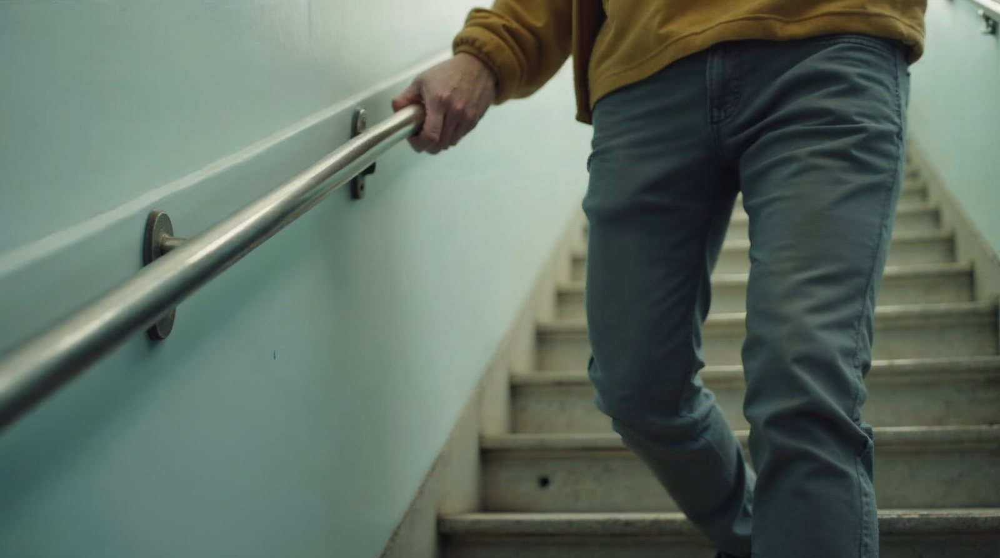
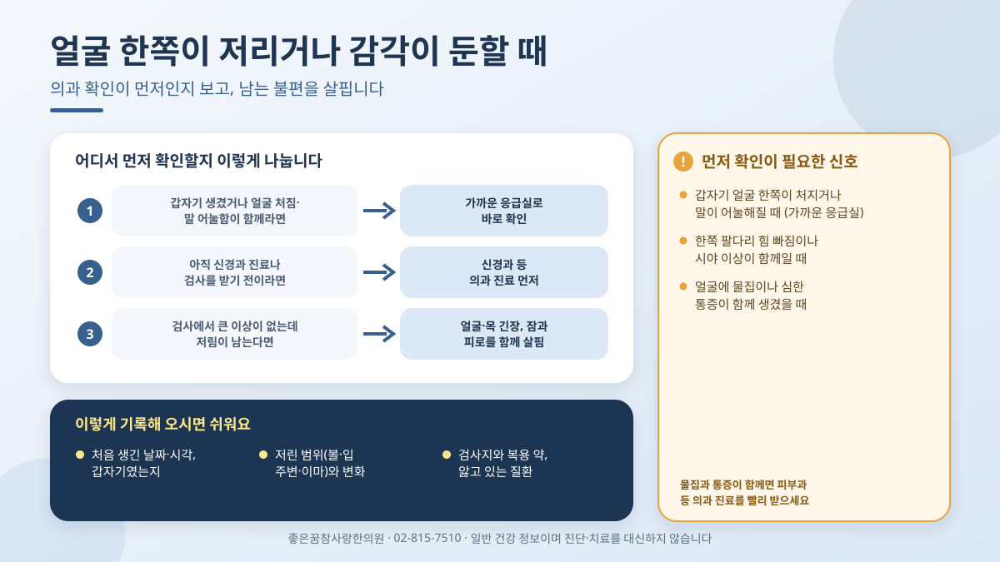
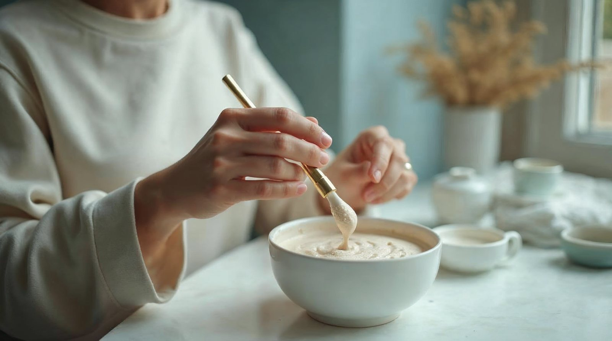
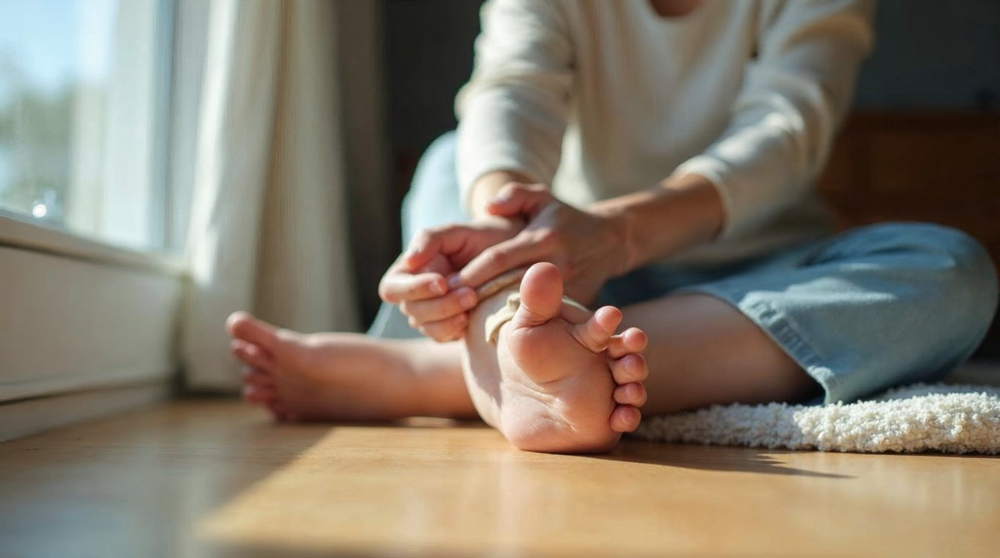
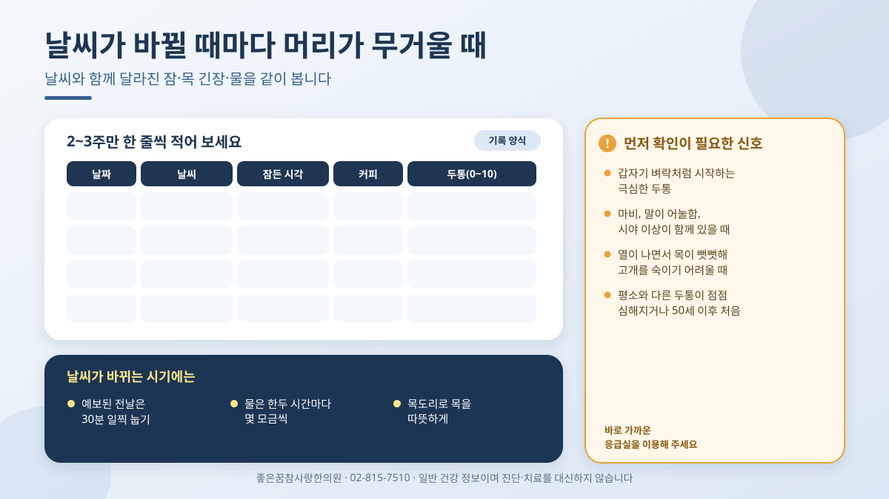

반복되는 두통, 고개를 돌릴 때의 어지럼, 손발 저림으로 "혹시 큰 병은 아닐까" 걱정되는 분을 위한 안내입니다. 좋은꿈참사랑한의원은 위험 신호부터 확인한 뒤, 맥을 짚고 목·어깨의 긴장과 잠, 소화, 눈의 피로까지 생활 리듬과 함께 살핍니다.

혹시 큰 병은 아닐까, 그 걱정부터 듣겠습니다
오후 네 시쯤 모니터 앞에서 관자놀이를 꾹 누르고 계신 적이 있으신가요. 아침엔 멀쩡했는데 점심을 먹고 나면 뒷목이 뻣뻣해지고, 퇴근 무렵이면 머리를 끈으로 조이는 것 같다고 하십니다. 노량진 학원가에서 하루 종일 책을 붙잡고 있는 수험생은 저녁만 되면 머리가 멍하고 무겁다고 합니다. 새벽에 돌아눕다가 천장이 빙 돌아서 깜짝 놀라 일어나 앉았다는 분도 계십니다.
이런 일이 몇 번 되풀이되면 걱정이 커집니다. 혹시 머릿속에 무슨 문제가 있는 건 아닐까, 저린 손이 큰 병의 시작은 아닐까. 인터넷을 찾아볼수록 마음은 더 무거워지고, 막상 병원에 가자니 별것 아니라고 할까 봐 미루게 됩니다. 진료실에서 이런 이야기를 꺼내시는 분들 얼굴을 보면, 아픈 것보다 그 걱정을 혼자 안고 계신 시간이 더 힘드셨겠구나 싶습니다.
그래서 저는 그 걱정부터 들으려고 합니다. 목과 어깨가 굳으며 오는 두통, 자세를 바꿀 때 잠깐 도는 어지럼, 오래 같은 자세로 있은 뒤의 저림은 일상에서 흔히 겪는 불편입니다. 다만 비슷해 보여도 확인이 급한 경우가 있어서, 그 구분을 가장 먼저 합니다. 급한 신호가 아니라면 그다음에 차근차근, 이 두통이 어떤 하루에서 생기는지를 함께 들여다봅니다.
두통 하나에도 조이는 듯한지, 욱신거리는지, 한쪽만 아픈지에 따라 살필 점이 다릅니다. 어지럼도 빙 도는지, 붕 뜨는지, 앞이 캄캄해지는지 말씀해 주시면 도움이 됩니다. 처음부터 정확하게 설명하지 못하셔도 괜찮습니다. 제가 하나씩 여쭙겠습니다.
이런 신호가 있으면 가까운 응급실이 먼저입니다
아래 신호가 있으면 한의원보다 가까운 응급실이나 신경과 진료가 먼저입니다. 망설이지 마시고 바로 확인을 받으세요.
- 벼락 치듯 갑자기 시작된 극심한 두통, 점점 심해지는 두통
- 두통과 함께 구토가 되풀이되거나 의식이 흐려지는 경우
- 한쪽 팔다리 힘 빠짐이나 저림이 번지는 경우, 얼굴 처짐
- 말이 어눌해지거나 시야가 흐려지고 겹쳐 보이는 경우
- 열과 목 경직이 함께 있는 두통, 머리를 부딪힌 뒤의 두통·구토·졸림
흔히 듣는 두통·어지럼·저림 이야기
저림은 어느 손가락이 저린지, 밤에 심한지, 특정 자세에서 심해지는지에 따라 관련된 부위가 달라 함께 확인합니다. 저린 것과 시린 것을 섞어서 말씀하시는 분도 많아서, 어떤 느낌인지 천천히 나누어 여쭙습니다.
- 오후가 되면 머리가 조이듯 아픈 두통
- 화면을 오래 본 뒤 눈과 관자놀이 통증
- 누워서 돌아누울 때 빙 도는 어지럼
- 아침에 손이 저리거나 밤에 다리가 불편함
두통은 이렇게 말씀해 주시면 도움이 됩니다
"머리가 아파요"라는 한마디 안에는 참 많은 두통이 들어 있습니다. 머리 둘레를 끈으로 조이는 것 같은지, 맥박 뛰듯 욱신거리는지, 한쪽만 아픈지 양쪽이 다 아픈지. 아침에 눈뜰 때부터 무거운지, 오후로 갈수록 심해지는지. 잠을 설친 다음 날 오는지, 날씨가 바뀔 때 오는지, 찬 바람을 맞은 뒤 이마와 뒷목이 먼저 아픈지도 여쭙습니다.
이런 걸 미리 다 정리해 오실 필요는 없습니다. 다만 두통이 왔을 때 '언제, 어디가, 어떻게'를 한 줄만 적어 두셔도 진료실에서 이야기가 훨씬 구체적이 됩니다. 편두통이 있는 분이라면 시작한 시각, 강도, 먹은 음식, 잠, 생리 주기(해당되는 경우)를 함께 적어 오시면 좋습니다.
어지럼과 저림도 나누어서 여쭙니다
"어지러워요"라는 말에도 여러 느낌이 섞여 있습니다. 천장이 빙글빙글 도는 느낌, 배를 탄 것처럼 몸이 둥둥 뜨는 느낌, 일어설 때 눈앞이 캄캄해지며 핑 하는 느낌, 머리가 멍하고 무거운 느낌. 어느 쪽에 가까운지, 몇 초나 가는지, 누울 때인지 일어설 때인지 고개를 돌릴 때인지를 여쭙습니다. 누웠다 일어날 때 빙글 도는 어지럼이 뚜렷하다면 귀 쪽 확인을 먼저 권해 드리기도 합니다.
저림도 마찬가지입니다. 저린 것과 시린 것을 같은 말로 쓰시는 분이 많습니다. 찌릿찌릿한지, 감각이 무딘지, 차갑게 시린지 나누어 말씀해 주세요. 엄지 쪽인지 새끼손가락 쪽인지, 밤에 자다가 저려서 깨는지, 오래 앉아 있다 일어날 때 다리가 저린지에 따라 살필 곳이 달라집니다. 한쪽 팔다리 저림이 갑자기 생기거나 점점 번지면 그때는 이야기보다 응급실이 먼저입니다.
노량진 학원가부터 상도동 골목까지, 하루의 모양이 다릅니다
노량진 학원가에서 하루 열 시간 넘게 책상 앞에 앉아 있는 수험생은 오후가 되면 머리가 무겁고 집중이 흐려진다고 합니다. 그런 분께는 공부 시간과 앉은 자세, 잠든 시각과 일어난 시각, 커피나 에너지 음료를 하루에 몇 잔 드시는지를 여쭙니다. 시험이 가까워질수록 잠을 줄이게 되는데, 잠이 부족한 날 두통이 더 쉽게 오는지도 함께 봅니다.
모니터 앞에서 일하는 직장인은 눈이 뻑뻑하고 이마와 관자놀이가 아프다고 하십니다. 화면을 보는 시간, 모니터 높이, 점심 뒤 머리가 무거워지는지를 여쭙고, 50분마다 한 번 화면에서 눈을 떼고 목을 풀어 보시라고 말씀드립니다. 상도동 언덕과 지하철역 계단을 오르내리다 어지럽고 다리가 휘청했다는 어르신께는 복용 중인 약과 혈압, 최근에 넘어진 적이 있는지를 먼저 여쭙습니다.
같은 두통, 같은 어지럼이라도 이렇게 하루의 모양이 다릅니다. 그래서 저는 증상 이름보다 그분의 하루를 먼저 듣고 싶습니다.
처음 오시면 이렇게 살핍니다
저는 처음 오신 분이든 다시 오신 분이든 맥부터 짚습니다. 두통으로 오셨어도, 어지럼으로 오셨어도 마찬가지입니다. 손목을 짚으면서 언제부터 그랬는지, 하루 중 언제 심한지, 어떤 날 더 나빴는지를 여쭙습니다.
한의학에서는 두통과 어지럼을 머리만의 문제로 보지 않고 목·어깨의 긴장, 소화, 잠, 피로와 함께 봅니다. 그래서 식후에 머리가 무거운지, 잠이 부족한 날 어지럼이 심한지, 스트레스를 받으면 뒷목이 당기는지, 몸이 차거나 뜨겁게 느껴지지는 않는지 같은 질문을 드립니다. "머리가 아파서 왔는데 소화는 왜 물으시나" 하실 수 있지만, 그 대답이 이분의 두통이 어떤 리듬에서 오는지 알려 줄 때가 많습니다.
필요하다고 판단될 때는 혀를 보는 설진도 하고, 목과 어깨를 손으로 짚어 굳은 곳을 확인합니다. 이런 답을 진찰 내용과 함께 보고 침, 추나, 한약 상담 가운데 지금 필요한 방법을 정합니다. 다른 의료기관의 확인이 먼저 필요해 보이면 그것부터 말씀드립니다. 이종호 대표원장은 뇌기능 재활을 주요 진료 분야로 소개하고 있습니다.
두통과 함께 잠·소화가 흔들릴 때
진료실에서 이야기를 나누다 보면 두통만 따로 오는 경우는 생각보다 적습니다. 점심을 먹고 나면 머리가 무겁고, 피곤한 날엔 어지럽고, 신경 쓸 일이 생기면 뒷목부터 당긴다고 하십니다. 잠이 얕아진 주에는 두통도 잦아지고, 두통 때문에 또 잠을 설칩니다. 몸이 하나의 리듬으로 움직이니, 한쪽이 흔들리면 다른 쪽도 같이 흔들리는 것이지요.
그래서 저는 머리 이야기를 들으면서도 하루의 리듬을 같이 묻습니다. 아래 같은 모습이 있으신지 떠올려 보시고, 오시는 날 편하게 들려주세요. 어느 쪽부터 손대는 것이 좋을지는 진찰 내용과 함께 보며 정합니다.
- 식후나 피곤할 때 머리가 무거운지
- 스트레스를 받으면 뒷목이 당기는지
- 잠이 부족한 날 어지럼이 심한지
- 손발은 찬데 얼굴로 열이 오르는지
먼저 이렇게 여쭙니다
- 언제, 얼마나 자주, 몇 시간 이어지나요?
- 두통 전후로 시야나 말, 힘의 변화가 있나요?
- 잠, 카페인, 화면 사용 시간은 어떤가요?
- 진통제를 한 달에 며칠 드시나요?
- 최근 혈압을 재 보신 적이 있나요?
첫 진료 날은 이렇게 흘러갑니다
처음 오시면 접수에서 기본 정보를 적어 주세요. 다른 병원에서 받은 검사 결과(혈액검사, 영상검사, 이비인후과 검사 등)와 복용 중인 약 목록이 있으면 가져오시면 좋습니다. 진료실에서는 증상이 언제부터 어떤 순서로 생겼는지를 듣고, 위험 신호가 없는지부터 확인합니다. 그다음 맥을 짚고, 필요하면 혀를 보고, 목과 어깨를 손으로 살핍니다.
치료 전에는 오늘 무엇을 왜 하는지 먼저 설명드립니다. 침이나 추나를 받으시는 동안 자세나 자극이 불편하시면 바로 말씀해 주세요. 어지럼이 있는 분은 치료가 끝나고 일어나실 때 천천히, 잠시 앉아 계셨다가 움직이시도록 안내합니다. 귀가 전에는 다음 진료까지 무엇을 적어 오시면 좋을지 말씀드립니다. 초진은 이야기를 듣는 시간이 있어 재진보다 오래 걸릴 수 있습니다.
집에서 해 볼 수 있는 것
어지러울 때는 갑자기 일어서지 말고, 앉은 자세에서 잠시 쉬었다가 천천히 움직이세요. 밤에 화장실 가는 길에 걸려 넘어질 만한 물건은 미리 치워 두시면 좋겠습니다. 상도동처럼 언덕과 계단이 많은 동네에서는 어지러운 날 서두르지 않는 것만으로도 마음이 한결 놓입니다.
두통은 기록이 큰 도움이 됩니다. 언제 시작했는지, 얼마나 아팠는지, 전날 몇 시간 잤는지 한 줄씩 적어 오시면 이야기가 훨씬 구체적이 됩니다. 진통제를 자주 드시게 되면 오히려 두통이 이어지는 경우가 있어서, 저는 몇 번 드셨는지도 꼭 여쭙습니다. 약을 끊으시라는 뜻이 아니라, 처방한 의사와 상의할 때 필요한 정보라서입니다.
- 두통 일기(시각·강도·먹은 것·잠) 쓰기
- 50분마다 화면에서 눈을 떼고 목 풀기
- 물 자주 마시고 끼니 거르지 않기
- 진통제를 먹은 날짜 기록하기
어지러운 어르신이 계시다면
어지럼으로 가장 걱정되는 것은 넘어지는 일입니다. 특히 밤에 화장실 가시다가, 아침에 이불에서 급히 일어나시다가 휘청하는 경우가 많습니다. 자리에서 일어나실 때는 먼저 앉아서 잠시 숨을 고르시고, 다리에 힘이 들어오는 것을 느낀 뒤 천천히 일어서시도록 말씀드려 주세요. 밤에는 침실에서 화장실까지 가는 길에 작은 불을 켜 두시고, 걸려 넘어질 만한 물건은 치워 두시면 좋겠습니다.
드시는 약이 여러 가지라면 약 이름을 적은 목록이나 약봉지를 가져와 주세요. 혈압을 집에서 재신다면 어지러웠던 날의 숫자도 함께 적어 오시면 도움이 됩니다. 복용 중인 약은 처방한 의사와 상의 없이 줄이거나 끊지 않으셔야 합니다. 넘어지면서 머리를 부딪혔다면, 그 뒤 두통이나 구토, 졸림이 생기는지 꼭 살펴봐 주시고 그런 모습이 보이면 바로 가까운 응급실로 가 주세요.
이명·귀 먹먹함
귀에서 '삐-' 소리나 바람 소리가 들리는 이명, 귀가 꽉 막힌 듯한 먹먹함은 원인이 다양합니다. 청력 상태와 귀 질환을 먼저 확인하는 것이 중요하기 때문에 이비인후과 검사 결과가 있으면 가져와 주세요.
일부 분들은 턱을 움직이거나 목을 돌릴 때 소리의 양상이 달라지기도 합니다. 그런 경우 목과 턱 주변의 긴장 상태도 함께 살펴봅니다. 이명 때문에 잠을 설치고 예민해지는 분이 많아, 소리뿐 아니라 수면과 일상의 변화도 함께 여쭙습니다.
갑자기 한쪽 귀가 잘 안 들리거나 심한 어지럼이 함께 오면 바로 이비인후과 진료를 받으셔야 합니다.
기억력·인지 건강
나이가 들면서 깜빡하는 일이 늘면 '혹시 치매가 아닐까' 걱정이 됩니다. 기억력이 떨어지는 이유는 노화뿐 아니라 수면 부족, 우울감, 복용약, 갑상선 문제, 신경계 질환 등 여러 가지입니다.
한의원에서는 잠, 소화, 통증처럼 어르신의 일상을 흔드는 문제를 진맥과 함께 살피고 관리합니다. 침이나 한약이 치매를 예방한다고 말씀드리지는 않습니다. 기억력 저하가 일상생활에 지장을 줄 정도라면 치매안심센터나 신경과의 인지기능 검사를 권해 드립니다.
이종호 대표원장은 동작구 어르신 대상 보건사업에 참여해 지역 어르신들을 만나 왔습니다. 사업 이름과 참여 방법은 해마다 달라질 수 있어 방문 전 전화로 확인해 주세요.
- 규칙적으로 걷고 움직이기
- 혈압·혈당·콜레스테롤 관리
- 잘 들리지 않으면 청력 관리
- 사람들과 어울리고 대화하기
- 충분히 자기
진료는 이렇게 이어집니다
다시 오시면 저는 지난번 이야기부터 꺼냅니다. "지난번에 오후마다 머리가 조인다고 하셨지요. 그사이 어떠셨어요?" 써 오신 두통 일기가 있으면 함께 펼쳐 보며, 어떤 날 덜했고 어떤 날 심했는지 같이 짚어 봅니다. 같은 치료를 되풀이하기보다 그날 몸 상태에 맞춰 방법을 다시 정합니다.
두통과 어지럼은 하루하루 오르내림이 있어서, 한 번 뵙고 판단하기보다 몇 번에 걸쳐 흐름을 보는 편이 정확합니다. 그래서 재진 때마다 맥을 다시 짚고, 그사이 잠과 식사, 진통제를 드신 날이 어땠는지 이어서 여쭙습니다. 담당 원장이 다른 날에도 이전 기록을 보고 이어서 진료하니, 처음부터 다시 설명하지 않으셔도 됩니다. 다른 의료기관 확인이 필요해 보이면 그때그때 바로 말씀드립니다.
진료시간은 평일 09:30~20:00(점심 13:00~14:00), 토·일·공휴일 09:30~15:00입니다. 수업이나 일이 끝난 저녁, 또는 주말에 들르셔도 됩니다.
상도역·노량진에서 오시는 길
좋은꿈참사랑한의원은 서울 동작구 만양로2길 2 신성빌딩 3층·5층, 상도동에 있습니다. 7호선 상도역 3번 출구로 나와 약 200m 직진한 뒤 오거리에서 오른쪽으로 약 200m 오시면 됩니다. 노량진역(1·9호선)에서는 3번 출구에서 마을버스 동작01을 타고 신동아리버파크에서 내리시면 됩니다.
어지럼이 있는 날에는 서두르지 마시고, 계단보다 엘리베이터를 이용해 천천히 올라오세요. 방문 전 궁금한 점은 02-815-7510으로 전화 주시면 안내해 드립니다.
함께 읽으면 좋은 글
- 어지럼이 빙빙 도는지, 아찔한지는 어떻게 구분해서 전하나요?
- 손발이 저린 것과 시린 것은 어떻게 다르게 설명하면 될까요?
- 잠을 못 자면 두통이 올 때는 어떻게 살피나요?
- 모니터를 오래 보고 나면 눈이 뻑뻑하고 이마와 관자놀이가 아플 때
- 지하철역 계단을 오르내릴 때 어지럽고 다리가 휘청할 때
상도동·노량진에서
노량진 학원가에서 하루 종일 책과 화면을 보는 수험생, 모니터 앞 직장인, 잠과 혈압의 변화를 겪는 상도동 어르신까지 두통과 어지럼의 배경은 다양합니다. 좋은꿈참사랑한의원은 상도역 3번 출구에서 약 400m 거리에 있고 노량진역에서는 마을버스 동작01번으로 오실 수 있습니다. 주차 가능 여부와 위치는 방문 전 02-815-7510으로 전화하시면 안내해 드립니다.
자주 묻는 질문
상도동에서 두통 때문에 한의원에 가도 되나요?
위험 신호가 없는 반복 두통은 좋은꿈참사랑한의원에서 상담받으실 수 있습니다. 갑작스럽고 극심한 두통이나 점점 심해지는 두통은 가까운 응급실이 먼저입니다.
어지러울 때 한의원과 병원 중 어디를 먼저 가야 하나요?
말이 어눌하거나 한쪽 힘이 빠지거나 걷기 어려우면 가까운 응급실이 먼저입니다. 그런 신호 없이 되풀이된다면 상담받으실 수 있습니다.
손발 저림도 상담하나요?
네. 저린 부위, 시간대, 자세를 여쭙고 필요하면 다른 검사를 안내합니다. 저림이 갑자기 번지거나 힘이 빠지면 응급실을 먼저 가세요.
진통제를 자주 먹는데 괜찮을까요?
한 달에 드신 날짜를 기록해 오세요. 횟수가 많으면 처방 의사와도 상의가 필요합니다. 임의로 줄이거나 끊지는 마세요.
이명도 상담할 수 있나요?
상담받으실 수 있습니다. 소리의 양상과 함께 수면, 목·턱의 긴장을 여쭙고, 이비인후과에서 귀 자체에 큰 이상이 없다고 했다면 침·한약 등 한의학적 관리를 검토합니다. 갑자기 한쪽 귀가 잘 안 들리면 이비인후과를 먼저 가세요.
이비인후과에서 이상이 없다는데 어떻게 하나요?
귀 자체에 큰 이상이 없다면 목·턱의 긴장, 수면, 스트레스 등을 함께 살펴 침·한약 등 한의학적 관리를 검토합니다.
목이 뻣뻣하면 이명이 심해질 수 있나요?
일부 분은 목·턱 움직임에 따라 이명이 달라지기도 합니다. 진찰로 확인합니다.
침이나 한약으로 치매를 예방할 수 있나요?
치매 예방 효과가 입증된 치료라고 말씀드리지는 않습니다. 다만 잠, 통증, 소화처럼 생활을 흔드는 문제를 살피고, 일상이 어려울 정도의 기억력 저하는 치매안심센터나 신경과 평가를 권합니다.
깜빡깜빡하는 게 치매인가요?
대부분은 일시적이거나 다른 원인일 수 있습니다. 일상생활이 어려울 정도라면 치매안심센터나 신경과에서 전문 평가를 받아 보시길 권합니다.
노량진 수험생 두통도 상담하나요?
네. 공부 시간, 자세, 잠, 카페인, 화면 보는 시간을 함께 여쭙습니다. 평일은 오후 8시까지, 주말은 오후 3시까지 진료합니다.
평일 저녁에 갈 수 있나요?
평일은 오후 8시까지 진료합니다. 네이버 예약이나 02-815-7510으로 예약하세요.
어르신 어지럼도 상담할 수 있나요?
받으실 수 있습니다. 복용 중인 약과 혈압, 넘어진 적이 있는지를 함께 여쭙고, 필요하면 다른 의료기관 진료를 안내합니다.
편두통이 있는데 무엇을 기록하면 좋나요?
두통이 시작된 시각, 강도, 먹은 음식, 잠, 생리 주기(해당되는 경우)를 적어 오시면 이야기가 구체적이 됩니다.
감수: 좋은꿈참사랑한의원 대표원장 이종호 · 마지막 확인 2026-11-26 · 일반적인 건강 정보이며 진단·치료를 대신하지 않습니다.
두통·어지럼·저림 글 모아 보기 (27편)
돌아누울 때 세상이 빙빙 도는 이석증 어지럼은 어떻게 살피나요?
눕거나 돌아누울 때, 고개를 들 때 수십 초 빙빙 돌다 멎는 어지럼은 이석증을 생각합니다. 말이 어눌하거나 한쪽 힘이 빠지거나 심한 두통이 함께 오면 가까운 응급실이 먼저입니다.
수정 2026-11-26

귀에서 소리가 들리는 이명이 있을 때는 어떤 점을 살펴보나요?
이명은 한쪽인지 양쪽인지, 갑자기 시작됐는지, 청력이 떨어졌는지를 먼저 여쭙고 이비인후과 검사 결과를 함께 봅니다. 갑자기 한쪽 귀가 안 들리면 그날 바로 이비인후과로 가시고, 잠·긴장·목과 턱의 뭉침과 소리 기록법을 정리했습니다.
수정 2026-11-26

스트레스를 받으면 뒷목이 당기고 머리가 아픈 긴장성 두통은 어떻게 살피나요?
머리를 띠로 조이듯 아프고 오후로 갈수록 무거워지는 긴장성 두통은 잠과 눈, 턱, 마음의 긴장, 진통제를 먹은 날을 함께 살핍니다. 갑자기 시작된 극심한 두통이나 말 어눌함·한쪽 힘 빠짐은 가까운 응급실이 먼저입니다.
수정 2026-11-26

한쪽 머리가 욱신거리는 편두통은 생활에서 무엇을 기록하나요?
편두통 일기에는 시작 시각과 전조, 잠과 식사, 카페인, 생리 주기, 날씨, 먹은 약과 그 뒤의 변화를 한 줄씩 적습니다. 처방받은 약은 처방한 의사와 상의 없이 바꾸지 않고, 갑자기 시작된 극심한 두통은 가까운 응급실이 먼저입니다.
수정 2026-11-26
손발이 저리고 차가울 때는 어떤 점을 먼저 확인하나요?
손발 저림은 혈액순환만의 문제가 아니어서 저린 자리와 시간, 목·허리·손목의 상태, 당뇨·갑상선 같은 몸 전체의 원인을 함께 살핍니다. 갑자기 한쪽이 저리고 힘이 빠지면 가까운 응급실이 먼저입니다.
수정 2026-11-26
앉았다 일어설 때 어지러운 것은 어떤 점을 살펴보나요?
앉았다 일어설 때 눈앞이 캄캄해지는 어지럼은 물·식사·잠과 복용 중인 약, 빈혈 가능성을 함께 살핍니다. 넘어지지 않게 일어서는 순서와 기록법, 정신을 잃거나 가슴이 아프면 응급실이 먼저인 경우를 정리했습니다.
수정 2026-11-26

충분히 쉬어도 몸이 늘 피곤한 만성피로는 어떤 점을 살펴보나요?
쉬어도 풀리지 않는 피로는 잠, 식사와 소화, 몸의 온기와 배변, 마음 가운데 어느 리듬이 어긋났는지 먼저 살핍니다. 빈혈·갑상선·당뇨·간 기능처럼 혈액 검사가 먼저 필요한 원인은 의과 검사와 함께 확인합니다.
수정 2026-11-26

겨울밤 자다가 종아리에 쥐가 나서 깨는 것은 어떻게 살피나요?
겨울밤 종아리 쥐는 낮 동안의 다리 피로와 찬 잠자리, 수분 섭취가 줄어든 것과 함께 나타나는 일이 많아, 쥐가 나는 시간과 낮의 활동을 먼저 묻고 잠들기 전 준비부터 함께 정리합니다.
수정 2026-11-25
찬바람을 맞은 아침에 이마와 뒷목이 조이듯 아픈 두통은 어떻게 살피나요?
찬바람 속에서 얼굴과 목에 힘을 주고 걸으면 이마와 뒷목이 조이는 두통이 따라올 수 있어, 아픈 위치와 시간, 함께 오는 증상을 먼저 묻고 목과 머리를 따뜻하게 하는 것부터 함께 챙깁니다.
수정 2026-11-25

시끄러운 지하철로 출퇴근한 뒤 귀가 먹먹하고 삐 소리가 날 때는 어떻게 살피나요?
소음이 큰 곳에서 이어폰 볼륨을 높여 오래 들으면 귀가 먹먹하고 삐 소리가 남을 수 있어, 이어폰 사용 시간과 볼륨, 소리가 들리는 때를 먼저 묻고, 한쪽 귀가 갑자기 잘 안 들리면 바로 이비인후과 진료를 안내합니다.
수정 2026-11-24

인강을 오래 보면 눈이 뻑뻑하고 머리가 무거울 때는 어떻게 하나요?
인강을 오래 봐 눈이 뻑뻑하고 머리가 무거울 때는 20분마다 먼 곳 보기, 화면 밝기와 거리 맞추기, 자기 전 화면 끄기부터 해 보고, 두통이 잦으면 목·어깨 긴장과 잠을 함께 살핍니다.
수정 2026-11-24

오래 앉아 공부하면 다리가 붓고 저릴 때는 무엇을 살피나요?
오래 앉아 공부해 다리가 붓고 저릴 때는 다리를 꼬지 않고 발목을 자주 움직이며 짠 음식을 줄이는 것부터 시작하고, 저림이 점점 넓어지거나 한쪽 다리만 붓는다면 먼저 확인이 필요합니다.
수정 2026-11-24
잠을 못 자면 두통이 올 때는 어떻게 살피나요?
잠이 부족하거나 불규칙한 날 두통이 심해진다면 수면 시간과 두통의 시간대, 카페인과 두통약 복용 횟수를 기록해 점검하고 갑자기 벼락 같은 두통이나 신경 증상이 있으면 한의원 진료를 기다리지 말고 가까운 응급실로 가야 합니다.
수정 2026-11-26

지하철역 계단을 오르내릴 때 어지럽고 다리가 휘청할 때는 어떻게 살피나요?
역 계단을 오르내릴 때 어지럼과 휘청거림이 반복되면 넘어질 위험이 있어, 어지러운 순간과 양상, 혈압과 복용 약, 잠과 식사를 먼저 묻고 안전하게 다니는 방법을 함께 정리하며, 갑작스러운 신호가 있으면 바로 응급 진료를 안내합니다.
수정 2026-11-24

오후만 되면 머리가 띵하고 집중이 떨어지는 수험생은 무엇을 살피나요?
오후만 되면 머리가 띵하고 집중이 떨어진다면 점심을 과식하지 않고 오후에 10분 바깥 공기 쐬기, 물 자주 마시기부터 해 보고, 두통이 잦으면 잠과 식사, 목·어깨 긴장을 함께 살핍니다.
수정 2026-11-24
밤에 누우면 다리가 근질거리고 움직이고 싶어 잠들기 어려울 때는 어떻게 하나요?
밤에 누우면 다리가 근질거리고 움직이고 싶어 잠들기 어렵다면 철분 부족처럼 확인이 필요한 원인이 있을 수 있어 의과 혈액 검사를 함께 권하고, 증상의 시간대와 잠, 복용 중인 약, 하루 활동을 함께 살핍니다.
수정 2026-11-24
손발이 저린 것과 시린 것은 어떻게 다르게 설명하면 될까요?
저림은 감각이 둔하거나 찌릿한 느낌이고 시림은 차갑고 시큰한 느낌이라, 어느 쪽인지와 생기는 부위·시간을 나눠 말씀해 주시면 살펴볼 방향을 정하기 쉽습니다.
수정 2026-11-24
아침에 일어나자마자 머리가 무겁고 아플 때는 무엇을 먼저 살피나요?
아침에 일어나자마자 머리가 무겁고 아프다면 잠의 질과 코골이·숨 멈춤, 베개 높이, 이 악물기, 전날 술과 카페인, 진통제 복용 횟수를 먼저 살피며, 갑자기 생긴 심한 두통은 바로 의과 확인이 필요합니다.
수정 2026-11-24

아침 두통과 저녁 두통은 진료실에서 어떻게 나눠서 말하면 좋을까요?
두통이 하루 중 언제 시작되는지는 잠, 식사, 눈의 피로, 자세와 이어진 경우가 많아, 시작 시각과 그 전후에 한 일을 나눠 말씀해 주시면 함께 살필 생활이 분명해집니다.
수정 2026-11-24

얼굴 한쪽이 저리거나 감각이 둔한 느낌이 있을 때는 무엇부터 확인하나요?
얼굴 한쪽이 저리거나 감각이 둔하면 먼저 신경과 등 의과 확인이 필요한 증상인지부터 보아야 하며, 갑자기 생겼거나 얼굴 처짐·말 어눌함이 함께 있으면 응급실에서 바로 확인하고, 검사 뒤 남는 불편은 함께 살핍니다.
수정 2026-11-24

얼굴 근육이 파르르 떨릴 때는 어떤 점을 먼저 확인하나요?
눈꺼풀이나 얼굴 근육이 파르르 떨리는 것은 피로와 잠 부족, 카페인, 스트레스와 관련된 경우가 많아 생활을 점검하고 얼굴 한쪽이 처지거나 말이 어눌하면 즉시 응급 진료가 필요하며 오래 이어지면 신경과 진료를 권합니다.
수정 2026-11-26

모니터를 오래 보고 나면 눈이 뻑뻑하고 이마와 관자놀이가 아플 때는 어떻게 하나요?
모니터를 오래 본 뒤 눈이 뻑뻑하고 이마와 관자놀이가 아프면 화면 보는 시간과 모니터 위치, 안경 도수, 목·어깨 긴장을 먼저 살피며, 시력 변화나 눈 통증이 있으면 안과 확인을 먼저 권합니다.
수정 2026-11-24
누워서 고개를 돌리거나 일어날 때 빙글 도는 어지럼이 있을 때는 어떻게 하나요?
누워서 고개를 돌리거나 일어날 때 짧게 빙글 도는 어지럼은 귀 안의 평형기관과 관련된 경우가 있어 먼저 이비인후과나 신경과 진료를 권하며, 그 뒤에 남는 불편과 생활 리듬은 함께 살핍니다.
수정 2026-11-24

어지럼이 빙빙 도는지, 아찔한지는 어떻게 구분해서 전하나요?
주변이 빙빙 도는지, 눈앞이 아찔하고 힘이 빠지는지, 몸이 휘청이는지를 나눠 말씀해 주시면 어떤 확인이 먼저 필요한지 판단하는 데 도움이 됩니다.
수정 2026-11-24

몸이 붓는 것은 순환과 관련이 있나요, 병원은 언제 먼저 가나요?
저녁에 다리가 붓는 정도는 오래 서 있거나 앉아 있는 습관과 관련 있는 경우가 많지만, 한쪽만 갑자기 붓거나 숨이 차거나 얼굴이 붓는 경우는 병원을 먼저 권합니다.
수정 2026-11-26

날씨가 바뀔 때마다 머리가 무겁고 아픈 것은 왜일까요?
날씨가 바뀔 때 머리가 무겁다면 그 시기의 잠, 목과 어깨 긴장, 물 마시는 양이 함께 흔들렸는지 먼저 살피고, 평소와 다른 심한 두통이면 병원 진료를 먼저 권합니다.
수정 2026-11-26

눈이 피로할 때 생기는 두통은 어떻게 살피나요?
화면을 오래 본 뒤 눈 뒤쪽과 이마가 조이듯 아프다면 눈을 쓰는 시간과 자세, 잠을 함께 살피고, 시력 변화나 시야 이상이 있으면 안과 진료를 먼저 권합니다.
수정 2026-11-26